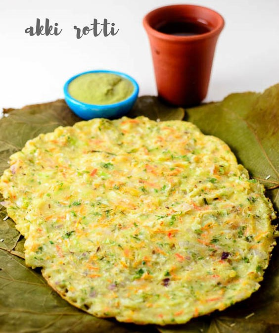

Rice roti with left over rice- Akki roti is rice based soft roti made with rice flour cumin seeds, onions, coriander leaves and green chillies. It is a popular Karnataka recipe. If you have rice left over you could make delicious roti for your breakfast.

Ingredients
2 cupsCooked Rice
5 TbspGrated carrot
5 Tbspchopped spring onions whites and greens
1/2 CupShredded Cabbage
1/4 tspAsafoetida (hing)
1/4 CupWhole wheat flour (gehun ka atta)
1/2 CupBesan (bengal gram flour)
1/2 tspTurmeric powder (haldi)
2 tspfinely chopped green chillies
2 TbspCurds (dahi)
2 TbspFinely chopped coriander (dhania)
Salt to Taste
Oil for Greasing and Cooking
Preparation
Combine all the ingredients in a bowl and mix well to make a batter of dropping consistency using approx. 1 cup of water.
Heat a non-stick tava (griddle) and grease it with little oil.
Pour a ladleful of the batter on it and spread into a circular motion to make a 100 mm. (4") diameter circle.
Cook on both sides, using little oil, till it turns golden brown in colour from both the sides.
Repeat steps 2 to 4 to make 9 more pancakes. Serve immediately with green chutney.